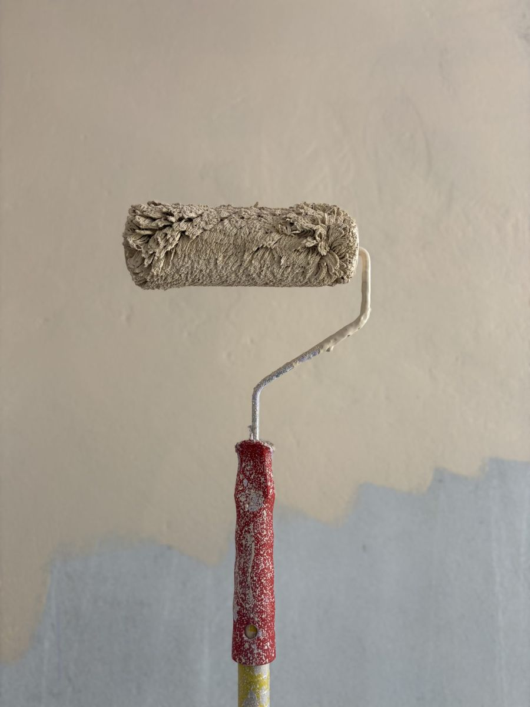

İç cephe boya
Salon, oda, koridor ve mutfak duvarları. Düzgün bir sonuç boyanın kendisinden çok altındaki hazırlığa bağlıdır: kazıma, macun, zımpara, astar, ardından katlar.
Boya, badana ve dekorasyon işleriniz için önce rengi görün: yelpazeden bir yaprağa dokunun, oda o renge boyansın.
Bir yaprağa dokunun. 56 renk ve üç oda için renk deneyiciyi açın.
Altı yaprak, altı iş. Bir yaprağa dokunun; ne olduğunu ve ne zaman gerektiğini yanında okuyun.
Salon, oda, koridor ve mutfak duvarları. Düzgün bir sonuç boyanın kendisinden çok altındaki hazırlığa bağlıdır: kazıma, macun, zımpara, astar, ardından katlar.
Tavanlar duvardan önce boyanır; tam mat tavan boyası rulo izini ve ışık yansımasını azaltır. Kiler, depo ve ortak alanlarda badana da bir seçenektir.
Çatlak, delik, dökülen sıva, kabaran boya. Bunlar onarılmadan sürülen boya kusuru örtmez, daha görünür yapar. Önce düz bir zemin gerekir.
Dokulu, desenli ve efektli uygulamalar; tek bir vurgu duvarı ya da bütün bir oda. Aklınızdaki örneği gönderin, yapılabilirliğini konuşalım.
Boya sırasında akla gelen ev içi onarımlar. Hangi işleri üstlendiğimizi telefonda sorun, bilgi verelim.
Ölçü, yüzeyin durumu ve renk kararı yerinde konuşulur. Net bilgi ancak duvarı gördükten sonra verilebilir; o yüzden iş keşifle başlar.
Telefonda uzun uzun anlatmak yerine işinizi birkaç dokunuşla tarif edin. Mesaj hazır gelir, göndermeden önce okursunuz.
Boya işinde sonucu belirleyen şeylerin çoğu, boya kutusu açılmadan önce olur. Usta ararken de, kendi evinize bakarken de işinize yarayacak beş bilgi.

5,0Google puanı
176 değerlendirme
Yorumları buraya kopyalamadık. Hepsini kaynağında, yazanların kendi sözleriyle okuyabilirsiniz.
Aydınlar, Sultangazi Cd. No:53-57/D, 34788 Çekmeköy/İstanbul
Kartelada 56 renk, üç oda, üç yüzey var. Kararsız kaldıysanız hepsini yan yana deneyin.
Renk deneyiciyi aç